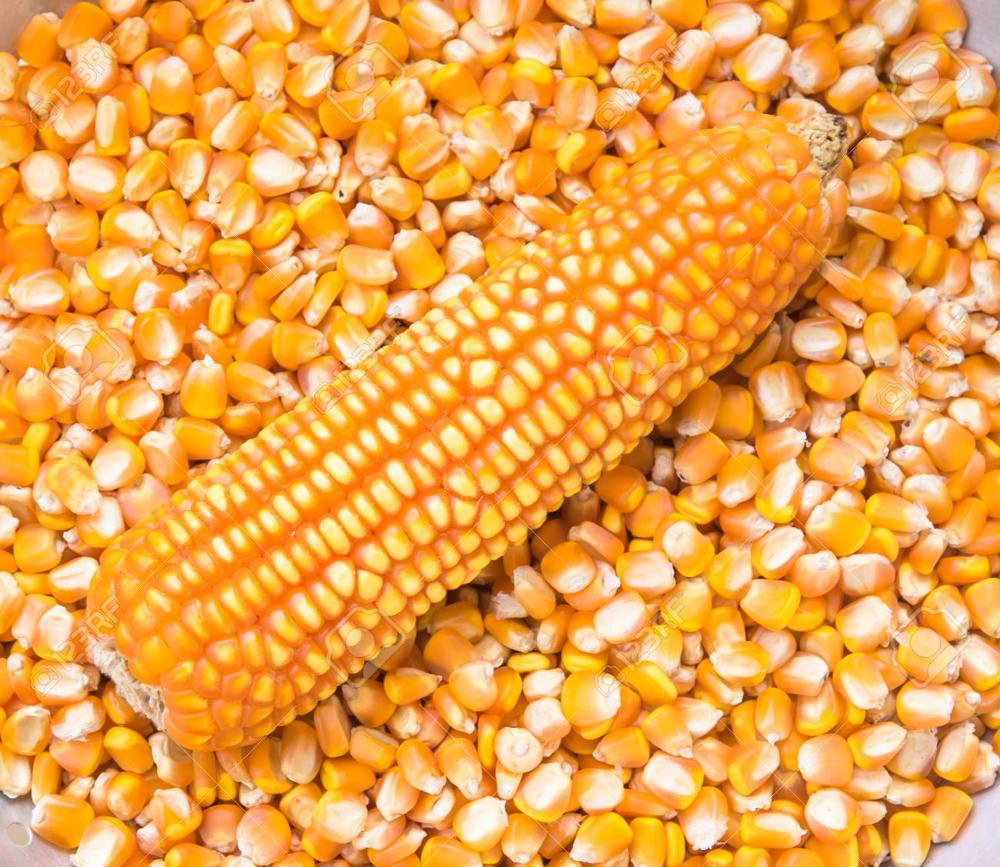

Maize is a staple food in many cultures, particularly in Asia, Africa, and Latin America. It is a high-nutritional crop that provides essential nutrients for growth, development, and overall health. Maize is also a popular crop for producing milk, butter, and cheese.
Maize!
Maize, also known as corn, is one of the most widely grown and consumed crops globally. It's a staple food in many cultures, particularly in the Americas, Africa, and Asia.
History and Origin
Maize originated in Central America around 7,000-10,000 years ago. It was first domesticated from the wild grass teosinte and was a crucial crop for the ancient Mayans and Aztecs.
Types of Maize
There are several types of maize, including:
1. Dent maize: Also known as field corn, this type is used for animal feed, ethanol production, and other industrial purposes.
2. Flint maize: This type is hard and dense, with a hard outer layer. It's often used for making tortillas, tamales, and other traditional dishes.
3. Sweet maize: This type is harvested when the kernels are immature and the corn is sweet and tender. It's often eaten boiled, grilled, or roasted.
4. Popcorn maize: This type is specialized for its ability to "pop" when heated.
Uses of Maize
Maize is an incredibly versatile crop with a wide range of uses, including:
1. Food: Maize is a staple food in many cultures, used in dishes like tacos, polenta, and cornbread.
2. Animal feed: Maize is a key ingredient in animal feed, particularly for poultry and livestock.
3. Ethanol production: Maize is used to produce ethanol, a biofuel that can be blended with gasoline.
4. Industrial products: Maize is used in the production of various industrial products, such as biodegradable plastics, textiles, and paper.
Nutritional Benefits
Maize is a good source of several essential nutrients, including
1. Carbohydrates: Maize is a rich source of carbohydrates, which provide energy for the body.
2. Fiber: Maize contains dietary fiber, which can help promote digestive health and support healthy blood sugar levels.
3. Vitamins and minerals: Maize is a good source of several vitamins and minerals, including vitamin E, thiamin, and folate.
Overall, maize is an incredibly important crop that plays a vital role in food security, animal nutrition, and industrial production around the world.
